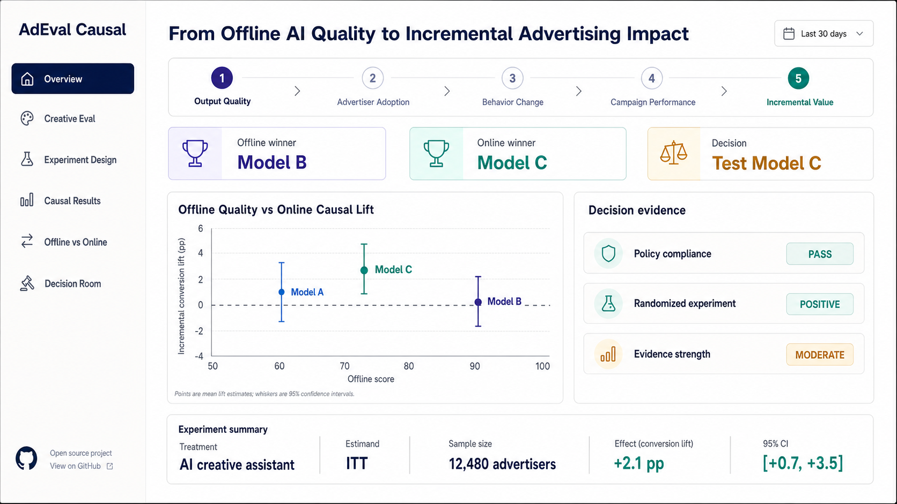

AdEval Causal
From offline AI quality to incremental advertising impact.
A synthetic research workbench for testing whether improvements in offline AI creative quality translate into incremental advertising outcomes after deployment.
I designed the five-stage measurement chain, an advertiser-level randomized experiment, reproducible intention-to-treat estimation and diagnostics, and a decision view that separates quality gates, causal evidence, uncertainty, and recommendations. LLM-based grading is kept separate from deterministic statistical estimation.

Prototype behavior: the live Streamlit app is loaded only on request. Public access must be enabled for anonymous visitors.